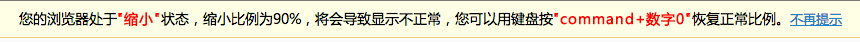

对网页的缩放情况进行实时检测，包括放大、缩小，并根据检测结果给出相应的提示。缩放你的页面，现在就试一试！

zd.start(configs)
一、接口功能
通过相关配置项，启动对某页面的缩放检测
二、参数说明
/**
* 网页缩放检测
* @param {Object} configs 用于页面缩放检测的配置项
* @p-config {Boolean} always 总是在后台进行页面缩放检测：每隔一段时间自动检测一次
* 设置为false时表示只检测一次，默认：true
* @p-config {Integer} interval 自动检测的时间间隔，默认：500ms
*/
三、示例
1、不设置任何参数：默认方式
// 网页缩放检测
zd.start();
这表示，组将将会在后台一直处于运行状态，对网页缩放情况进行实时检测。如果需要停止检测，可以使用WebpageZoomDetect.stop()方法。
2、修改自动检测的时间间隔
假设fun的定义体为如下形式：
// 网页缩放检测，修改时间间隔
zd.start({
interval : 1000 // 每隔1s检测一次
});
3、按需检测：只检测一次
// 网页缩放检测：只进行一次
zd.start({
always : false
});